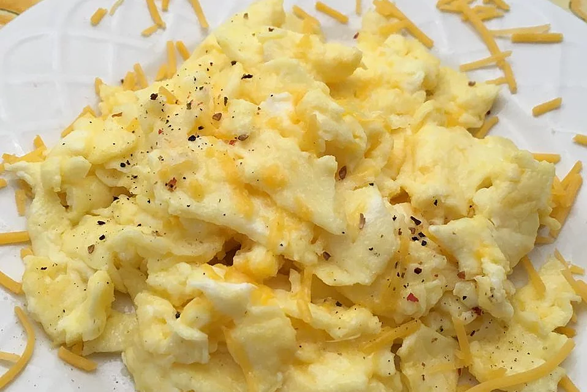

Scrambled Eggs

Description
These thick, moist eggs are cheesy and easily customizable to please everyone!
Ingredients
- 2 eggs
- 2 tablespoons of cheedar cheese
- 1 tsp of heavy whipping cream
- 0.5 tsp of butter
- Any additional toppings, such as ham, bacon, or peppers
Steps
- Melt butter in a skillet over medium heat.
- Whisk eggs in a bowl.
- Mix cheese, heavy cream, and any additional toppings into eggs.
- Pour egg mixture into skillet.
- Stir for 3 to 5 minutes.
- Remove when cooked but still moist.